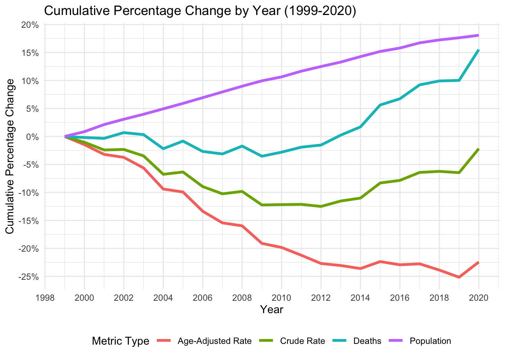
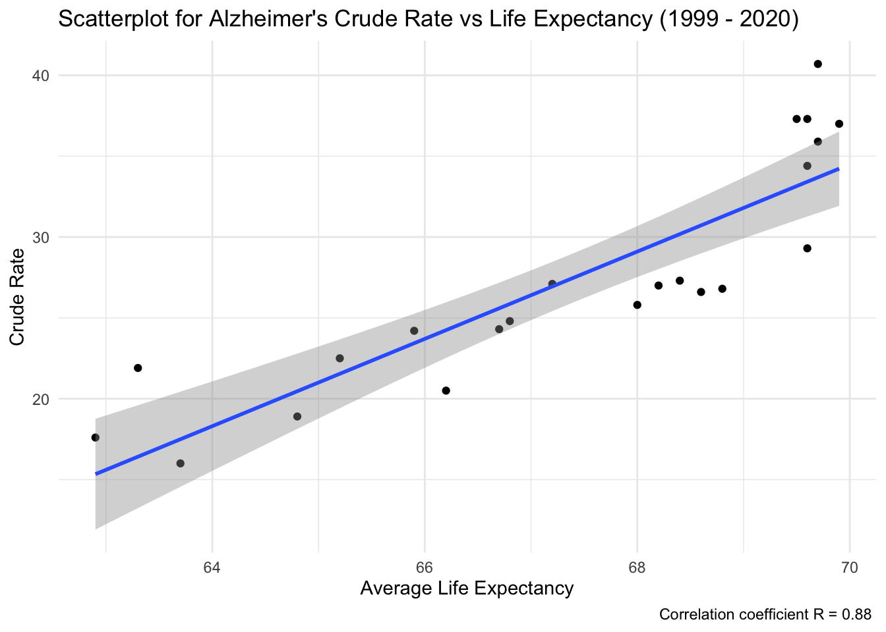
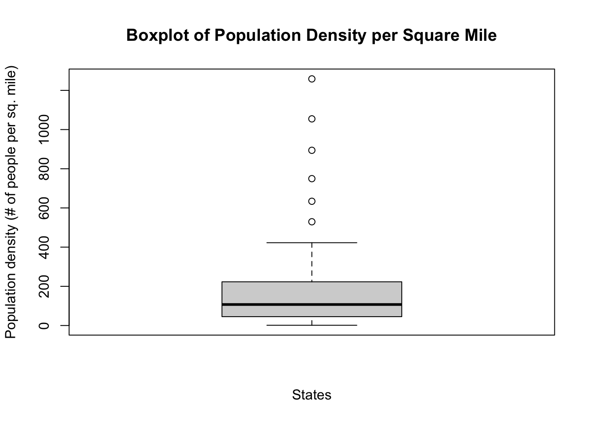

Code
library(dplyr)
library(readr)
library(dplyr)
library(forcats)
library(ggplot2)
library(scales)
library(tidyr)
library(maps)Instructions: You have a lot of freedom to choose what to do, as long as you restrict yourselves to exploratory techniques (rather than modeling / prediction approaches). In addition, your analysis must be clearly documented and reproducible.
Provide a short nontechnical summary of the most revealing findings of your analysis written for a nontechnical audience. Take extra care to clean up your graphs, ensuring that best practices for presentation are followed, as described in the audience ready style section below.
Use subheadings (##) as appropriate. See Todd Schneider’s blog posts for examples of thoughtful, informative subheadings. An approach that works well is to create a subheading for each of your research questions.
The number of graphs will vary by project; we suggest a target of 10. (A plot with multiple facets counts as 1 graph). If you go over, make sure they are high quality and include commentary. A project with 10 good graphs plus commentary will receive a better grade than a project with 10 good graphs and 10 mediocre ones.
library(dplyr)
library(readr)
library(dplyr)
library(forcats)
library(ggplot2)
library(scales)
library(tidyr)
library(maps)First, we will get the dataset ready for analysis.
#We begin by loading the dataframe and renaming some columns for easier handling
cdc_dataset = read_csv("NCHS_Leading_Causes_of_Death_United_States_2020.csv")
cdc_dataset <- cdc_dataset %>% rename(Cause = `Cause Name`)
cdc_dataset <- cdc_dataset %>% rename(Age_Adj_Rate = `Age Adjusted Rate`)
cdc_dataset <- cdc_dataset %>% rename(Crude_Rate = `Crude Rate`)
#Replacing NA with zero in all columns as mentioned in the previous section
cdc_dataset <- cdc_dataset |> mutate_all(~ifelse(is.na(.), 0, .))
#We will not use '113 Cause Name' but 'Cause Name'
cdc_dataset <- cdc_dataset |> select(-`113 Cause Name`)We will select the 10 most important causes of death from a historical perspective in the United States.
cdc_usa <- cdc_dataset[cdc_dataset$State == "United States", ]
#Detecting the top 10 most important causes of death in the US from 1999 to 2020
cdc_usa_summary <- cdc_usa |> group_by(Cause) |> summarize(Total_Deaths = sum(Deaths)) |>
arrange(desc(Total_Deaths)) |> top_n(10, Total_Deaths)
# Creating the bar chart for top 10 causes
ggplot(cdc_usa_summary, aes(x = reorder(Cause, Total_Deaths), y = Total_Deaths)) +
geom_bar(stat = "identity", fill = '#8B4513') +
coord_flip() + labs(title = "Most Relevant Causes of Death - 1999 to 2020", y = "Total Number of Deaths (Millions)", x = "Cause Name") +
scale_y_continuous(labels = scales::comma_format(scale = 1e-6), breaks = scales::pretty_breaks(n = 10)) +
theme_minimal()
The bar chart above identifies 10 most common causes of death in the United States aggregated from year 1999 to 2020. It’s is visible that heart disease and cancer account for a significant bulk of all deaths. We will focus our analysis on these.
#Filtering cdc_dataset by the top 10 Cause Name from cdc_usa_summary
cdc_dataset <- cdc_dataset[cdc_dataset$Cause %in% cdc_usa_summary$Cause, ]
cdc_usa <- cdc_usa[cdc_usa$Cause %in% cdc_usa_summary$Cause, ]
# rm(cdc_usa_summary)Notice that the deaths incorporated in these 10 categories, are almost 90% of the total figure of deaths.
As population grows, deaths (with a lag) will eventually grow. We would like to understand the interplay between population growth, deaths growth, and the evolution of death rates since 1999. For this, we will create metrics and facet them in time series.
#Grouping by Year and State, and summarizing the data. We can take min(Population) to keep the population of that year
cdc_usa_grouped <- cdc_usa |> group_by(Year) |>
summarize(
Deaths = sum(Deaths),
Population = min(Population),
Crude_Rate = sum(Crude_Rate),
Age_Adj_Rate = sum(Age_Adj_Rate),
.groups = 'drop'
)
#Reshaping data using pivot_longer so we can facet by metric:
cdc_usa_long <- cdc_usa_grouped |>
pivot_longer(cols = c(Deaths, Population, Crude_Rate, Age_Adj_Rate), names_to = "Metric", values_to = "Value")
#Adjusting the order and names of the metrics
cdc_usa_long$Metric <- factor(cdc_usa_long$Metric,
levels = c("Population", "Crude_Rate", "Deaths", "Age_Adj_Rate"),
labels = c("Population in US", "Crude Death Rate", "Deaths", "Age Adjusted Death Rate"))
#Creating the time series:
ggplot(cdc_usa_long, aes(x = Year, y = Value)) +
geom_line(color = "#FF6C22", size = 1.2) +
facet_wrap(~ Metric, scales = "free_y", ncol = 2) +
labs(title = "Time Series", x = "Year", y = "Value") +
scale_y_continuous(labels = scales::comma, breaks = scales::pretty_breaks(n = 4)) +
theme_bw()Warning: Using `size` aesthetic for lines was deprecated in ggplot2 3.4.0.
ℹ Please use `linewidth` instead.
Let’s make some general observations:
A good way to compare the trends, would be to observe the cumulative perceptual growth of each metric, in a single time series plot:
#Calculating cumulative percentual change for each column
cdc_usa_grouped_cum <- cdc_usa_grouped |>
mutate(
Deaths = Deaths / first(Deaths) - 1,
Population = Population / first(Population) - 1,
Crude_Rate = Crude_Rate / first(Crude_Rate) - 1,
Age_Adj_Rate = Age_Adj_Rate / first(Age_Adj_Rate) - 1
)
#pivot_longer this data:
cdc_usa_grouped_cum <- cdc_usa_grouped_cum |>
pivot_longer(cols = -Year, names_to = "Metric", values_to = "Cumulative Change")
#Creating the time series plot
ggplot(cdc_usa_grouped_cum, aes(x = Year, y = `Cumulative Change`, color = Metric)) +
geom_line(size = 1.3) +
labs(title = "Cumulative Percentual Change (1999-2020)", x = "Year",
y = "Cumulative Percentual Change", color = "Metric") +
theme_minimal() +
theme(legend.position = "bottom") +
scale_y_continuous(labels = scales::percent_format(), breaks = scales::pretty_breaks(n = 8))+
scale_x_continuous(breaks = scales::pretty_breaks(n = 10))
General observations:

According to the CDC, the best metric to study death evolution is using age-adjusted death rates. We then begin by investigating the evolution of age adjusted death rate across time.
#Creating a faceting chart, which will have age adjusted death rates by cause of death:
df_usa_cause <- cdc_usa |> select(Year, Cause, Age_Adj_Rate)
ggplot(df_usa_cause, aes(x = Year, y = Age_Adj_Rate, group = Cause, color = Cause)) +
geom_line(size = 0.5) + # Thicker lines
facet_wrap(~ Cause, scales = "free_y") +
theme_bw() +
labs(title = "Time Series of Causes of Death in the USA", x = "Year", y = "Age Adjusted Death Rate")+
guides(color = "none") +
geom_point()
We can make the following observations:
The different types of causes don’t share the same dimensions. We can compare the evolution of these death-rates calculating the percentual growth over time:
cdc_usa_wider <- df_usa_cause |>
pivot_wider(
id_cols = Year,
names_from = Cause,
values_from = Age_Adj_Rate
)
#Calculating cumulative percentual change for each column
cdc_usa_wider <- cdc_usa_wider |> mutate(across(-Year, ~ ./first(.) - 1))
#pivot_longer this data:
cdc_usa_wider <- cdc_usa_wider |> pivot_longer(cols = -Year, names_to = "Metric", values_to = "Cumulative Change")
#We use a color blind friendly palette
color_blind_friendly <- c("#E69F00", "#56B4E9", "#009E73", "#F0E442",
"#0072B2", "#D55E00", "#CC79A7", "#999999",
"#882255", "#88CCEE")
#Creating the time series plot
ggplot(cdc_usa_wider, aes(x = Year, y = `Cumulative Change`, color = Metric)) +
geom_line(size = 1) +
labs(title = "Cumulative Change - Age Adj. Death Rate", x = "Year", y = "Cumulative Percentual Change", color = "Metric") +
theme_minimal() +
theme(legend.position = "right") +
scale_y_continuous(labels = scales::percent_format(), breaks = scales::pretty_breaks(n = 8))+
scale_x_continuous(breaks = scales::pretty_breaks(n = 10)) +
scale_color_manual(values = color_blind_friendly) 
With the cumulative percentage time series graph broken down by cause, we can see some interesting trends and better understand the trends over time. In particular, deaths caused by Alzheimer’s disease is aggressively increasing year by year. Unintentional injuries and suicide are the number two and number three fastest growing causes of death, respectively. Additionally, we can note that stroke, influenza and pneumonia, and heart disease have actually been decreasing during the same time of 1999-2020. Those we should note that death from Stroke, Influenza and pneumonia, and heart disease diseases showed a decreasing trend until 2012, but then began to grow again.
The overall trend is downward for the age adjusted death rate. However, we have identified three causes that show a different behavior. Now we will try to identify which states are leading in these metrics.
#Filter the data for the specified conditions
df_rank1 <- cdc_dataset |> filter(State != 'United States') |>
select(Year, State, Cause, Age_Adj_Rate)|>
filter(Year %in% c(1999, 2020), Cause == "Alzheimer's disease")
# Calculating the percentual difference change from 2000 to 2017 for each state
df_rank1 <- df_rank1 %>%
pivot_wider(names_from = Year, values_from = Age_Adj_Rate) |>
mutate(PercentChange = `2020`/`1999`-1) |>
arrange(desc(PercentChange))
#Cleveland
ggplot(df_rank1, aes(x = PercentChange, y = reorder(State, PercentChange))) +
geom_point(size = 3, color = "darkgreen") +
labs(title = "Alzheimer's Disease %Chg. in Age Adj. Death Rate", x = "Percentage Change 1999 to 2020", y = 'State') +
theme_bw() +
theme(panel.grid.major.x = element_blank(),
panel.grid.minor.x = element_blank(),
panel.grid.major.y = element_line(colour = "grey60", linetype = "dashed"))+
scale_x_continuous(labels = scales::percent_format(), breaks = scales::pretty_breaks(n = 8))+
theme(legend.position = "none")
We can see that Mississippi, Arkansas and Alabama have seen the largest increase, while Maine, Maryland and Montana are the smallest.
#Filter the data for the specified conditions
df_rank2 <- cdc_dataset |> filter(State != 'United States') |>
select(Year, State, Cause, Age_Adj_Rate)|>
filter(Year %in% c(1999, 2020), Cause == "Unintentional injuries")
# Calculating the percentual difference change from 2000 to 2017 for each state
df_rank2 <- df_rank2 %>%
pivot_wider(names_from = Year, values_from = Age_Adj_Rate) |>
mutate(PercentChange = `2020`/`1999`-1) |>
arrange(desc(PercentChange))
#Cleveland
ggplot(df_rank2, aes(x = PercentChange, y = reorder(State, PercentChange))) +
geom_point(size = 3, color = "darkblue") +
labs(title = "Unintent. Injuries %Chg in Age Adj Death Rate", x = "Percentage Change 1999 to 2020", y = 'State') +
theme_bw() +
theme(panel.grid.major.x = element_blank(),
panel.grid.minor.x = element_blank(),
panel.grid.major.y = element_line(colour = "grey60", linetype = "dashed"))+
scale_x_continuous(labels = scales::percent_format(), breaks = scales::pretty_breaks(n = 8))+
theme(legend.position = "none")
We can see that Rhode Island, West Virginia, and Massachusetts have seen the largest increase, while Idaho, Nebraska and Alabama are the smallest.
#Filter the data for the specified conditions
df_rank3 <- cdc_dataset |> filter(State != 'United States') |>
select(Year, State, Cause, Age_Adj_Rate)|>
filter(Year %in% c(1999, 2020), Cause == "Suicide")
# Calculating the percentual difference change from 2000 to 2017 for each state
df_rank3 <- df_rank3 %>%
pivot_wider(names_from = Year, values_from = Age_Adj_Rate) |>
mutate(PercentChange = `2020`/`1999`-1) |>
arrange(desc(PercentChange))
#Cleveland
ggplot(df_rank3, aes(x = PercentChange, y = reorder(State, PercentChange))) +
geom_point(size = 3, color = "orange") +
labs(title = "Suicide %Chg. in Age Adj. Death Rate", x = "Percentage Change 1999 to 2020", y = 'State') +
theme_bw() +
theme(panel.grid.major.x = element_blank(),
panel.grid.minor.x = element_blank(),
panel.grid.major.y = element_line(colour = "grey60", linetype = "dashed"))+
scale_x_continuous(labels = scales::percent_format(), breaks = scales::pretty_breaks(n = 8))+
theme(legend.position = "none")
We can see that Vermont, Iowa and Kansas have seen the largest increase, while California, Rhode Island and Nevada are the smallest.
It is interesting to note that in the case of Alzheimer’s, Unintentional Injuries and Suicide, the three diseases exhibit increasing age adjusted rates in the period. There are only a few exceptions such as Nevada and Rhode Island in Suicide or Maine in Alzheimer’s where a decreasing rate has been seen. For this reason, we believe it is worth looking at box plots to identify outliers and find explanations for them.
df_box <- rbind(
df_rank1[, c("State", "Cause", "PercentChange")],
df_rank2[, c("State", "Cause", "PercentChange")],
df_rank3[, c("State", "Cause", "PercentChange")]
)
ggplot(df_box, aes(x = Cause, y = PercentChange)) +
geom_boxplot(fill = "#A6CF98", color = "black") +
theme_bw() + labs(title = "Box-Plot: Percent Change by Cause - 1999 to 2020 - by States", x = "Cause", y = "Percent Change") +
scale_y_continuous(labels = scales::percent)
Matching these values with the previous cleveland dot plots, we can say that Mississippi is an outlier for Alzheimer. Rhode Island and West Virginia are outliers for Unintentional Injuries. Finally, Suicide seems to not have any outlier. From the boxplots we also notice that the three causes are skewed to the right.
Apparently the states most affected by Alzheimer’s are in the southern part of the United States. Given the possible geographical dependence, we propose to corroborate the information with the following geospatial visualization.
To make the differences more notorious, we are going to paint the top 12% of States in terms growing deaths due to Alzheimer.
#We calculate the 88th percentile (top 12% threshold)
top_10_percent_threshold <- quantile(df_rank1$PercentChange, probs = 0.88, na.rm = TRUE)
#We create a new variable to indicate top 12%
df_rank1$Top10Percent <- ifelse(df_rank1$PercentChange > top_10_percent_threshold, "Top 12%", "Below Top 12%")
#For the merge to work, we ensure that state names in both datasets are in lowercase for successful merging
df_rank1$State <- tolower(df_rank1$State)
states_map <- map_data("state")
states_map$region <- tolower(states_map$region)
#Merging the datasets
df_map <- merge(states_map, df_rank1, by.x = "region", by.y = "State", all.x = TRUE)
#We plot the map
ggplot(data = df_map, aes(x = long, y = lat, group = group, fill = Top10Percent)) +
geom_polygon(color = "black") +
scale_fill_manual(values = c("Top 12%" = "red", "Below Top 12%" = "grey"),
labels = c("Below Top 12%", "Top 12%")) +
labs(fill = "Category") +
theme_bw() +
theme(panel.grid.major = element_blank(), panel.grid.minor = element_blank(),
axis.text.x = element_blank(), axis.text.y = element_blank(),
axis.title.x = element_blank(), axis.title.y = element_blank()) +
coord_fixed(1.4) +
labs(title = "Top 6 States with highest Death Rates due to Alzheimer's") + theme(legend.position="none")
We can clearly see a cluster in the south-east of the U.S. This cluster concentrates the 12% that saw the biggest increase in deaths due to Alzhmeier’s (age-adjusted).
According to this study: https://www.nia.nih.gov/news/data-shows-racial-disparities-alzheimers-disease-diagnosis-between-black-and-white-research, black people are almost twice more likely to develop dementia due to a higher exposure to risk factors. For this reason, we will investigate black race distribution by state.
First, let’s take a look if there is indeed a difference between the Age-Adjusted Death Rate of Black vs White people:
#Loading cases of Alzheimer distinguished by race across time:
cdc_dataset_race = read_csv("NCHS_Leading_Causes_of_Death_United_States_2020_Race.csv")
cdc_dataset_race <- cdc_dataset_race |> mutate_all(~ifelse(is.na(.), 0, .))
cdc_usa_race = cdc_dataset_race |> filter(State == "United States") |> select(Year, Race, Age_Adj_Death_Rate)
#Pivot wider:
cdc_usa_race <- cdc_usa_race |> pivot_wider(names_from = Race, values_from = Age_Adj_Death_Rate)
cdc_usa_race <- cdc_usa_race |> mutate(across(-Year, ~ ./first(.) - 1))
#pivot_longer this data:
cdc_usa_race <- cdc_usa_race |> pivot_longer(cols = -Year, names_to = "Alzheimer", values_to = "Cumulative Change")
#Creating the time series plot
ggplot(cdc_usa_race, aes(x = Year, y = `Cumulative Change`, color = Alzheimer)) +
geom_line(size = 1.3) +
labs(title = "Cumulative Percentage Change ('99-'20) - Alzheimer - Age Adjusted Death Rate", x = "Year",
y = "Cumulative Percentage Change", color = "Race") +
theme_minimal() +
theme(legend.position = "bottom") +
scale_y_continuous(labels = scales::percent_format(), breaks = scales::pretty_breaks(n = 8))+
scale_x_continuous(breaks = scales::pretty_breaks(n = 10))
In fact, we can clearly see a difference between white and black people: the later having increased its death rate by 160% vs 95% during the last 20 years.
Let’s see then the distribution of black people by state. We will take the averages across the time period:
cdc_usa_race_pop = read_csv("NCHS_United_States_2020_Race_Distribution.csv")
cdc_usa_race_pop = cdc_usa_race_pop |> group_by(Race, State) |> summarize(Population = mean(Population))
cdc_usa_race_pop <- cdc_usa_race_pop |> pivot_wider(names_from = Race, values_from = Population)
cdc_usa_race_pop$Total = cdc_usa_race_pop$Black + cdc_usa_race_pop$White
cdc_usa_race_pop$Black = cdc_usa_race_pop$Black/cdc_usa_race_pop$Total
cdc_usa_race_pop = cdc_usa_race_pop |> select(State, Black)
#We calculate the 88th percentile (top 12% threshold)
cdc_usa_race_pop_threshold <- quantile(cdc_usa_race_pop$Black, probs = 0.80, na.rm = TRUE)
#We create a new variable
cdc_usa_race_pop$TopPercent <- ifelse(cdc_usa_race_pop$Black > cdc_usa_race_pop_threshold, "Top 25%", "Below Top 25%")
#For the merge to work, we ensure that state names in both datasets are in lowercase for successful merging
cdc_usa_race_pop$State <- tolower(cdc_usa_race_pop$State)
states_map <- map_data("state")
states_map$region <- tolower(states_map$region)
#Merging the datasets
df_map <- merge(states_map, cdc_usa_race_pop, by.x = "region", by.y = "State", all.x = TRUE)
#We plot the map
ggplot(data = df_map, aes(x = long, y = lat, group = group, fill = TopPercent)) +
geom_polygon(color = "black") +
scale_fill_manual(values = c("Top 25%" = "blue", "Below Top 25%" = "grey"),
labels = c("Below Top 25%", "Top 25%")) +
labs(fill = "Category") +
theme_bw() +
theme(panel.grid.major = element_blank(), panel.grid.minor = element_blank(),
axis.text.x = element_blank(), axis.text.y = element_blank(),
axis.title.x = element_blank(), axis.title.y = element_blank()) +
coord_fixed(1.4) +
labs(title = "Top 10 States with highest proportion of Black People") + theme(legend.position="none")
# df_map %>% filter(TopPercent =="Top 25%") %>% distinct(region)Although not perfect, we see a strong correlation that supports the study: southern states have the most share of black people, and it coincides with the states that have had higher increases of deaths due to Alzheimer’s disease.
df_life_expectancy <- read_csv("NCHS_-_Death_rates_and_life_expectancy_at_birth_20231111.csv")
#df_life_expectancy
df_life_expectancy_1939_to_1960 = df_life_expectancy %>% filter(Race == "All Races") %>% filter(Sex == "Both Sexes") %>% filter(Year >= 1939) %>% filter(Year <= 1960) %>% select(-Race,-Sex,-`Age-adjusted Death Rate`)
#df_life_expectancy_1939_to_1960
alzheimer_crude = cdc_usa %>% filter(Cause == "Alzheimer's disease") %>% select(Year, Cause,Crude_Rate)
#alzheimer_crude
expectancy_alzheimer_regression_2 = cbind(alzheimer_crude,df_life_expectancy_1939_to_1960)
#expectancy_alzheimer_regression_2 # this is the table
ggplot(expectancy_alzheimer_regression_2 %>% select(`Crude_Rate`,`Average Life Expectancy (Years)`), aes(x = `Average Life Expectancy (Years)`, y = `Crude_Rate`)) +
geom_point() +
geom_smooth(method = "lm") +
labs(x = "Average Life Expectancy", y = "Crude Rate", title = "Scatterplot Regression for Alzheimer's Crude Rate vs Life Expectancy (1999 - 2020)") +
labs(caption = "Correlation coefficient R = 0.88 ") +
theme(plot.caption = element_text(hjust=.1))
y = expectancy_alzheimer_regression_2$`Crude_Rate`
x = expectancy_alzheimer_regression_2$`Average Life Expectancy (Years)`
regression_model_cumul_growth <- lm(y ~ x)
cor.test(y,x)
Pearson's product-moment correlation
data: y and x
t = 8.2172, df = 20, p-value = 7.687e-08
alternative hypothesis: true correlation is not equal to 0
95 percent confidence interval:
0.7253415 0.9486506
sample estimates:
cor
0.8783436 According to CDC, the Alzheimer’s onset is around 60 years old. It’s interesting to note that there has been a general increase in life expectancy for people born between 1939 and 1960. In 1999, they would have reached 60 years old, which is around the age of first onset. The Life expectancy rose from 63.7 to 69.7 years old. Naturally, we see a very high positive correlation (0.88) between the increase of deaths due to Alzheimer’s disease and the rise in life expectancy.
The increase is clearly due to opioids: https://www.cdc.gov/opioids/basics/epidemic.html
I was trying to get a dataset like: opioid sales.. but ofc, this is illegal market, and hard to record any data… it seems that deaths are the only dataset to track the consumption? Not sure….
library(readr)
df_opiod <- read_csv("NCHS_Opiod_Dispense.csv")Warning: One or more parsing issues, call `problems()` on your data frame for details,
e.g.:
dat <- vroom(...)
problems(dat)Rows: 771 Columns: 4
── Column specification ────────────────────────────────────────────────────────
Delimiter: ","
chr (3): State, StateAbb, Year
dbl (1): OpiodDispenseRatePer100
ℹ Use `spec()` to retrieve the full column specification for this data.
ℹ Specify the column types or set `show_col_types = FALSE` to quiet this message.df_opiod_state = df_opiod %>% filter(State != 'United States')
df_opiod_state = df_opiod_state %>% select(-StateAbb)
df_opiod_state_arranged = df_opiod_state %>% arrange(desc(OpiodDispenseRatePer100))
#df_opiod_state_arranged %>% filter(State == 'West Virginia')
#df_opiod_state_arranged %>% filter(Year <= 2020) %>% group_by(State) %>% summarize(Avg = mean(OpiodDispenseRatePer100)) %>% arrange(desc(Avg)) %>% filter(Avg > 95)
z = df_opiod_state_arranged %>% filter(Year <= 2020) %>% group_by(State) %>% summarize(Avg = mean(OpiodDispenseRatePer100)) %>% arrange(desc(Avg)) %>% filter(Avg > 95)
z_reverse = z[order(z$Avg), ]
#z_reverse
# ggplot(df_opiod_state_arranged %>% filter(Year <= 2020) %>% group_by(State) %>% summarize(Avg = mean(OpiodDispenseRatePer100)) %>% arrange(desc(Avg)) %>% filter(Avg > 95), aes(x = State, y = Avg)) +
# geom_bar(stat = "identity", fill = '#8B4513')
my_cols <- c("blue", "darkgreen", "orange")
dotchart(z_reverse$Avg, labels = z_reverse$State,gcolor = "green",
cex = 0.9, xlab = "Opioid Dispense Rate Per 100", main = "Top 8 Highest States with Average Opioid Dispense Rate for 2006-2020")
We see that West Virginia has the highest average dispensing rate
df_opiod_state_arranged_top5_states = df_opiod_state_arranged %>% filter(State == "West Virginia" | State == "Alabama" | State == "Tennessee" | State == "Kentucky" | State == "Arkansas" | State == "Mississippi" | State == "Oklahoma" | State == "Louisiana")
df_opiod_state_arranged_top5_states# A tibble: 120 × 3
State OpiodDispenseRatePer100 Year
<chr> <dbl> <chr>
1 West Virginia 147. 2009
2 West Virginia 146. 2008
3 Alabama 144. 2012
4 West Virginia 143. 2010
5 Alabama 142. 2013
6 Tennessee 140 2010
7 West Virginia 140. 2011
8 Tennessee 138. 2011
9 Tennessee 138. 2009
10 Kentucky 137 2011
# ℹ 110 more rowsggplot(df_opiod_state_arranged_top5_states, aes(x = as.numeric(Year), y = OpiodDispenseRatePer100, color = State)) +
geom_line(size = 1) +
geom_point() +
theme_minimal() +
theme(legend.position = "bottom") 
top5_states_adj_rate_unint = cdc_dataset %>% filter(State != "United States") %>% filter(Cause == "Unintentional injuries") %>% filter(Year > 2005)
top5_states_adj_rate_unint = top5_states_adj_rate_unint %>% group_by(State) %>% summarize(Avg = mean(Age_Adj_Rate)) %>% arrange(desc(Avg)) %>% filter(Avg > 57)# %>% filter(Avg > 57.4)
#top5_states_adj_rate_unint
w = top5_states_adj_rate_unint
#w
w_reverse = w[order(w$Avg), ]
#w_reverse
dotchart(w_reverse$Avg, labels = w_reverse$State,gcolor = "green",
cex = 0.9, xlab = "Age Adjusted Death Rate", main = "Top 8 Highest States w/ Avg Age-Adj Death Rate for Unintentional '06-'20")
selected_top5 = cdc_dataset %>% filter(Cause == "Unintentional injuries") %>%
filter(State == "West Virginia" | State == "New Mexico" | State == "Kentucky" | State == "Mississippi" | State == "Alaska" | State == "Wyoming" | State == "Oklahoma" | State == "Tennessee") %>% filter(Year > 2005)
selected_top5# A tibble: 120 × 7
Year Cause State Deaths Population Crude_Rate Age_Adj_Rate
<dbl> <chr> <chr> <dbl> <dbl> <dbl> <dbl>
1 2006 Unintentional injuries Alaska 316 675302 46.8 52.3
2 2006 Unintentional injuries Kentu… 2446 4219239 58 57.9
3 2006 Unintentional injuries Missi… 1856 2904978 63.9 64.7
4 2006 Unintentional injuries New M… 1297 1962137 66.1 67.6
5 2006 Unintentional injuries Oklah… 2039 3594090 56.7 56.6
6 2006 Unintentional injuries Tenne… 3307 6088766 54.3 54.3
7 2006 Unintentional injuries West … 1177 1827912 64.4 62.4
8 2006 Unintentional injuries Wyomi… 306 522667 58.5 58.9
9 2007 Unintentional injuries Alaska 354 680300 52 56.3
10 2007 Unintentional injuries Kentu… 2372 4256672 55.7 55.6
# ℹ 110 more rowsggplot(selected_top5, aes(x = as.numeric(Year), y = Age_Adj_Rate, color = State)) +
geom_line(size = 1) +
geom_point() +
theme_minimal() +
theme(legend.position = "bottom") opiod_top8 = df_opiod_state_arranged_top5_states %>% distinct(State)
opiod_top8$State[1] "West Virginia" "Alabama" "Tennessee" "Kentucky"
[5] "Oklahoma" "Arkansas" "Mississippi" "Louisiana" death_rate_top8 = selected_top5 %>% distinct(State)
death_rate_top8$State[1] "Alaska" "Kentucky" "Mississippi" "New Mexico"
[5] "Oklahoma" "Tennessee" "West Virginia" "Wyoming" intersect(opiod_top8$State,death_rate_top8$State)[1] "West Virginia" "Tennessee" "Kentucky" "Oklahoma"
[5] "Mississippi" We see that chooseing 8 states that have had the highest average death rate from 2006 to 2020, and choosing 8 states that have had the highest average opiod dispensing, 5 states intersect.
Didnt manage to arrive here today.
top10_avg_suicide_states = cdc_dataset %>% filter(State != "United States") %>% filter(Cause == "Suicide") %>% group_by(State) %>% summarize(Avg = mean(Age_Adj_Rate)) %>% arrange(desc(Avg)) %>% filter(Avg > 16.9)
top10_avg_suicide_states# A tibble: 10 × 2
State Avg
<chr> <dbl>
1 Wyoming 22.6
2 Alaska 22.6
3 Montana 22.1
4 New Mexico 20.6
5 Nevada 19.4
6 Idaho 18.5
7 Utah 18.4
8 Colorado 18.0
9 Oklahoma 17.0
10 Arizona 16.9as.vector(top10_avg_suicide_states %>% distinct(State))$State
[1] "Wyoming" "Alaska" "Montana" "New Mexico" "Nevada"
[6] "Idaho" "Utah" "Colorado" "Oklahoma" "Arizona" united_states_by_area <- read_csv("united-states-by-area.csv")Rows: 50 Columns: 14
── Column specification ────────────────────────────────────────────────────────
Delimiter: ","
chr (1): state
dbl (13): fips, densityMi, pop2023, pop2022, pop2020, pop2019, pop2010, grow...
ℹ Use `spec()` to retrieve the full column specification for this data.
ℹ Specify the column types or set `show_col_types = FALSE` to quiet this message.# View(united_states_by_area)
united_states_by_area_density = united_states_by_area %>% select(state,densityMi) %>% arrange(densityMi)
lowest_population_density_states = united_states_by_area_density[1:10,]
lowest_population_density_states# A tibble: 10 × 2
state densityMi
<chr> <dbl>
1 Alaska 1.28
2 Wyoming 6.01
3 Montana 7.83
4 North Dakota 11.3
5 South Dakota 12.2
6 New Mexico 17.4
7 Idaho 23.9
8 Nebraska 25.7
9 Nevada 29.2
10 Kansas 35.9 united_states_by_area_density# A tibble: 50 × 2
state densityMi
<chr> <dbl>
1 Alaska 1.28
2 Wyoming 6.01
3 Montana 7.83
4 North Dakota 11.3
5 South Dakota 12.2
6 New Mexico 17.4
7 Idaho 23.9
8 Nebraska 25.7
9 Nevada 29.2
10 Kansas 35.9
# ℹ 40 more rowscolnames(united_states_by_area_density) <- c('State','densityMi')
united_states_by_area_density# A tibble: 50 × 2
State densityMi
<chr> <dbl>
1 Alaska 1.28
2 Wyoming 6.01
3 Montana 7.83
4 North Dakota 11.3
5 South Dakota 12.2
6 New Mexico 17.4
7 Idaho 23.9
8 Nebraska 25.7
9 Nevada 29.2
10 Kansas 35.9
# ℹ 40 more rowsavg_suicide_rate = cdc_dataset %>% filter(State != "United States") %>% filter(Cause == "Suicide") %>% group_by(State) %>% summarize(Avg = mean(Age_Adj_Rate)) %>% arrange(desc(Avg))
avg_suicide_rate# A tibble: 51 × 2
State Avg
<chr> <dbl>
1 Wyoming 22.6
2 Alaska 22.6
3 Montana 22.1
4 New Mexico 20.6
5 Nevada 19.4
6 Idaho 18.5
7 Utah 18.4
8 Colorado 18.0
9 Oklahoma 17.0
10 Arizona 16.9
# ℹ 41 more rowsmerged_df <- merge(united_states_by_area_density, avg_suicide_rate, by = "State")
merged_df State densityMi Avg
1 Alabama 100.67620 13.677273
2 Alaska 1.28449 22.559091
3 Arizona 65.61541 16.927273
4 Arkansas 58.86715 15.818182
5 California 249.81347 9.977273
6 Colorado 56.62333 18.009091
7 Connecticut 749.49504 8.977273
8 Delaware 529.49461 11.472727
9 Florida 422.59351 13.577273
10 Georgia 191.91701 11.972727
11 Hawaii 223.14152 11.740909
12 Idaho 23.88287 18.527273
13 Illinois 224.74459 9.445455
14 Indiana 191.27287 13.268182
15 Iowa 57.34903 12.804545
16 Kansas 35.91504 14.759091
17 Kentucky 114.42109 14.840909
18 Louisiana 105.39265 12.586364
19 Maine 45.17855 14.472727
20 Maryland 634.04862 9.086364
21 Massachusetts 894.13564 7.822727
22 Michigan 177.41244 12.131818
23 Minnesota 71.87131 11.454545
24 Mississippi 62.45398 12.890909
25 Missouri 89.98998 14.854545
26 Montana 7.82919 22.145455
27 Nebraska 25.67286 11.750000
28 Nevada 29.23222 19.436364
29 New Hampshire 156.70245 13.845455
30 New Jersey 1258.55820 7.186364
31 New Mexico 17.39527 20.636364
32 New York 413.71663 7.263636
33 North Carolina 222.79940 12.386364
34 North Dakota 11.31271 15.136364
35 Ohio 287.50579 12.177273
36 Oklahoma 59.01851 16.977273
37 Oregon 44.00522 16.522727
38 Pennsylvania 289.02749 12.281818
39 Rhode Island 1054.62573 9.427273
40 South Carolina 178.70337 13.245455
41 South Dakota 12.18140 16.650000
42 Tennessee 173.01630 14.618182
43 Texas 116.75553 11.645455
44 Utah 41.65130 18.440909
45 Vermont 70.21330 14.845455
46 Virginia 220.55895 12.022727
47 Washington 117.83476 14.031818
48 West Virginia 73.41651 16.036364
49 Wisconsin 109.03241 12.913636
50 Wyoming 6.00743 22.604545boxplot(united_states_by_area_density$densityMi)
ggplot(merged_df, aes(x = log(densityMi), y = Avg)) + geom_point() + geom_smooth(method = "lm") +
theme(plot.caption = element_text(hjust=.1))`geom_smooth()` using formula = 'y ~ x'
y = merged_df$Avg
x = log(merged_df$densityMi)
regression_model_cumul_growth <- lm(y ~ x)
cor.test(y,x)
Pearson's product-moment correlation
data: y and x
t = -11.724, df = 48, p-value = 1.081e-15
alternative hypothesis: true correlation is not equal to 0
95 percent confidence interval:
-0.9190277 -0.7661560
sample estimates:
cor
-0.8609083 summary(regression_model_cumul_growth)
Call:
lm(formula = y ~ x)
Residuals:
Min 1Q Median 3Q Max
-5.2630 -1.2212 0.2523 1.3288 3.0195
Coefficients:
Estimate Std. Error t value Pr(>|t|)
(Intercept) 24.4925 0.9385 26.10 < 2e-16 ***
x -2.3046 0.1966 -11.72 1.08e-15 ***
---
Signif. codes: 0 '***' 0.001 '**' 0.01 '*' 0.05 '.' 0.1 ' ' 1
Residual standard error: 1.915 on 48 degrees of freedom
Multiple R-squared: 0.7412, Adjusted R-squared: 0.7358
F-statistic: 137.4 on 1 and 48 DF, p-value: 1.081e-15summary_gdp <- read_csv("SASUMMARY__ALL_AREAS_1998_2022.csv")Warning: One or more parsing issues, call `problems()` on your data frame for details,
e.g.:
dat <- vroom(...)
problems(dat)Rows: 784 Columns: 33
── Column specification ────────────────────────────────────────────────────────
Delimiter: ","
chr (31): GeoFIPS, GeoName, TableName, IndustryClassification, Description, ...
dbl (2): Region, LineCode
ℹ Use `spec()` to retrieve the full column specification for this data.
ℹ Specify the column types or set `show_col_types = FALSE` to quiet this message.View(summary_gdp)
summary_gdp_only = summary_gdp %>% filter(Description == "Gross domestic product (GDP)") %>% select(GeoName,`2017`,`2018`,`2019`) %>% filter(GeoName != 'United States')
summary_gdp_only = summary_gdp_only %>% mutate(AvgGDP = (as.numeric(`2017`)+as.numeric(`2018`)+as.numeric(`2019`)) / 3)
summary_gdp_only# A tibble: 51 × 5
GeoName `2017` `2018` `2019` AvgGDP
<chr> <chr> <chr> <chr> <dbl>
1 Alabama 216615.5 226263.8 234526.4 225802.
2 Alaska 53550.9 54762.0 54469.9 54261.
3 Arizona 333099.0 353671.0 375545.0 354105
4 Arkansas 123882.6 129213.8 132637.2 128578.
5 California 2740550.3 2899530.9 3062158.9 2900747.
6 Colorado 350209.1 373923.1 397701.6 373945.
7 Connecticut 273875.1 280535.4 285466.4 279959.
8 Delaware 69555.6 73376.0 78685.8 73872.
9 District of Columbia 134298.8 141240.2 145171.0 140237.
10 Florida 1014866.9 1072085.6 1127988.6 1071647.
# ℹ 41 more rowscolnames(summary_gdp_only) <- c('State','2017','2018','2019','AvgGDP')
summary_gdp_only# A tibble: 51 × 5
State `2017` `2018` `2019` AvgGDP
<chr> <chr> <chr> <chr> <dbl>
1 Alabama 216615.5 226263.8 234526.4 225802.
2 Alaska 53550.9 54762.0 54469.9 54261.
3 Arizona 333099.0 353671.0 375545.0 354105
4 Arkansas 123882.6 129213.8 132637.2 128578.
5 California 2740550.3 2899530.9 3062158.9 2900747.
6 Colorado 350209.1 373923.1 397701.6 373945.
7 Connecticut 273875.1 280535.4 285466.4 279959.
8 Delaware 69555.6 73376.0 78685.8 73872.
9 District of Columbia 134298.8 141240.2 145171.0 140237.
10 Florida 1014866.9 1072085.6 1127988.6 1071647.
# ℹ 41 more rowsmerged_df2 <- merge(merged_df, summary_gdp_only, by = "State")
merged_df2 State densityMi Avg 2017 2018 2019 AvgGDP
1 Alabama 100.67620 13.677273 216615.5 226263.8 234526.4 225801.90
2 Alaska 1.28449 22.559091 53550.9 54762.0 54469.9 54260.93
3 Arizona 65.61541 16.927273 333099.0 353671.0 375545.0 354105.00
4 Arkansas 58.86715 15.818182 123882.6 129213.8 132637.2 128577.87
5 California 249.81347 9.977273 2740550.3 2899530.9 3062158.9 2900746.70
6 Colorado 56.62333 18.009091 350209.1 373923.1 397701.6 373944.60
7 Connecticut 749.49504 8.977273 273875.1 280535.4 285466.4 279958.97
8 Delaware 529.49461 11.472727 69555.6 73376.0 78685.8 73872.47
9 Florida 422.59351 13.577273 1014866.9 1072085.6 1127988.6 1071647.03
10 Georgia 191.91701 11.972727 583543.3 612803.4 646939.0 614428.57
11 Hawaii 223.14152 11.740909 87436.4 90933.5 93356.2 90575.37
12 Idaho 23.88287 18.527273 72935.1 79072.4 84550.2 78852.57
13 Illinois 224.74459 9.445455 832826.8 871024.2 895800.0 866550.33
14 Indiana 191.27287 13.268182 357535.8 377376.9 385446.2 373452.97
15 Iowa 57.34903 12.804545 187125.0 193155.1 196085.1 192121.73
16 Kansas 35.91504 14.759091 166273.6 173373.0 176917.7 172188.10
17 Kentucky 114.42109 14.840909 203564.0 210509.1 220683.3 211585.47
18 Louisiana 105.39265 12.586364 239830.7 256444.4 257096.7 251123.93
19 Maine 45.17855 14.472727 63000.6 66216.0 69298.2 66171.60
20 Maryland 634.04862 9.086364 399714.5 410771.8 419447.6 409977.97
21 Massachusetts 894.13564 7.822727 530129.4 559605.0 588617.5 559450.63
22 Michigan 177.41244 12.131818 505101.5 525240.8 536975.6 522439.30
23 Minnesota 71.87131 11.454545 354721.9 372439.2 383961.6 370374.23
24 Mississippi 62.45398 12.890909 110281.4 113166.4 115441.7 112963.17
25 Missouri 89.98998 14.854545 311273.8 320451.6 334364.7 322030.03
26 Montana 7.82919 22.145455 48470.5 51152.1 52772.5 50798.37
27 Nebraska 25.67286 11.750000 123219.9 127954.4 132741.0 127971.77
28 Nevada 29.23222 19.436364 163199.1 172547.9 184343.9 173363.63
29 New Hampshire 156.70245 13.845455 81179.6 83859.4 87472.0 84170.33
30 New Jersey 1258.55820 7.186364 590086.7 619340.2 641877.6 617101.50
31 New Mexico 17.39527 20.636364 93210.1 98838.2 103869.2 98639.17
32 New York 413.71663 7.263636 1624800.7 1710665.6 1793261.3 1709575.87
33 North Carolina 222.79940 12.386364 546810.1 568037.3 593126.9 569324.77
34 North Dakota 11.31271 15.136364 56530.2 60377.1 60516.3 59141.20
35 Ohio 287.50579 12.177273 652187.5 672540.1 703127.8 675951.80
36 Oklahoma 59.01851 16.977273 192538.6 204193.9 205262.6 200665.03
37 Oregon 44.00522 16.522727 225534.5 238466.9 248939.8 237647.07
38 Pennsylvania 289.02749 12.281818 754318.0 780620.7 803078.0 779338.90
39 Rhode Island 1054.62573 9.427273 58771.6 60064.9 62526.9 60454.47
40 South Carolina 178.70337 13.245455 224937.6 236561.7 248046.5 236515.27
41 South Dakota 12.18140 16.650000 51615.1 53349.5 55007.4 53324.00
42 Tennessee 173.01630 14.618182 355417.5 369713.2 385819.5 370316.73
43 Texas 116.75553 11.645455 1667313.0 1808026.9 1860108.3 1778482.73
44 Utah 41.65130 18.440909 172075.0 186805.7 201285.4 186722.03
45 Vermont 70.21330 14.845455 32589.2 33482.6 34628.1 33566.63
46 Virginia 220.55895 12.022727 515167.2 537158.3 561989.6 538105.03
47 Washington 117.83476 14.031818 527169.4 570337.8 608966.4 568824.53
48 West Virginia 73.41651 16.036364 75172.4 79794.3 79883.8 78283.50
49 Wisconsin 109.03241 12.913636 321886.8 335144.3 347398.6 334809.90
50 Wyoming 6.00743 22.604545 37620.3 39614.5 39971.4 39068.73boxplot(merged_df2$AvgGDP)
merged_df2 %>% arrange(desc(AvgGDP)) State densityMi Avg 2017 2018 2019 AvgGDP
1 California 249.81347 9.977273 2740550.3 2899530.9 3062158.9 2900746.70
2 Texas 116.75553 11.645455 1667313.0 1808026.9 1860108.3 1778482.73
3 New York 413.71663 7.263636 1624800.7 1710665.6 1793261.3 1709575.87
4 Florida 422.59351 13.577273 1014866.9 1072085.6 1127988.6 1071647.03
5 Illinois 224.74459 9.445455 832826.8 871024.2 895800.0 866550.33
6 Pennsylvania 289.02749 12.281818 754318.0 780620.7 803078.0 779338.90
7 Ohio 287.50579 12.177273 652187.5 672540.1 703127.8 675951.80
8 New Jersey 1258.55820 7.186364 590086.7 619340.2 641877.6 617101.50
9 Georgia 191.91701 11.972727 583543.3 612803.4 646939.0 614428.57
10 North Carolina 222.79940 12.386364 546810.1 568037.3 593126.9 569324.77
11 Washington 117.83476 14.031818 527169.4 570337.8 608966.4 568824.53
12 Massachusetts 894.13564 7.822727 530129.4 559605.0 588617.5 559450.63
13 Virginia 220.55895 12.022727 515167.2 537158.3 561989.6 538105.03
14 Michigan 177.41244 12.131818 505101.5 525240.8 536975.6 522439.30
15 Maryland 634.04862 9.086364 399714.5 410771.8 419447.6 409977.97
16 Colorado 56.62333 18.009091 350209.1 373923.1 397701.6 373944.60
17 Indiana 191.27287 13.268182 357535.8 377376.9 385446.2 373452.97
18 Minnesota 71.87131 11.454545 354721.9 372439.2 383961.6 370374.23
19 Tennessee 173.01630 14.618182 355417.5 369713.2 385819.5 370316.73
20 Arizona 65.61541 16.927273 333099.0 353671.0 375545.0 354105.00
21 Wisconsin 109.03241 12.913636 321886.8 335144.3 347398.6 334809.90
22 Missouri 89.98998 14.854545 311273.8 320451.6 334364.7 322030.03
23 Connecticut 749.49504 8.977273 273875.1 280535.4 285466.4 279958.97
24 Louisiana 105.39265 12.586364 239830.7 256444.4 257096.7 251123.93
25 Oregon 44.00522 16.522727 225534.5 238466.9 248939.8 237647.07
26 South Carolina 178.70337 13.245455 224937.6 236561.7 248046.5 236515.27
27 Alabama 100.67620 13.677273 216615.5 226263.8 234526.4 225801.90
28 Kentucky 114.42109 14.840909 203564.0 210509.1 220683.3 211585.47
29 Oklahoma 59.01851 16.977273 192538.6 204193.9 205262.6 200665.03
30 Iowa 57.34903 12.804545 187125.0 193155.1 196085.1 192121.73
31 Utah 41.65130 18.440909 172075.0 186805.7 201285.4 186722.03
32 Nevada 29.23222 19.436364 163199.1 172547.9 184343.9 173363.63
33 Kansas 35.91504 14.759091 166273.6 173373.0 176917.7 172188.10
34 Arkansas 58.86715 15.818182 123882.6 129213.8 132637.2 128577.87
35 Nebraska 25.67286 11.750000 123219.9 127954.4 132741.0 127971.77
36 Mississippi 62.45398 12.890909 110281.4 113166.4 115441.7 112963.17
37 New Mexico 17.39527 20.636364 93210.1 98838.2 103869.2 98639.17
38 Hawaii 223.14152 11.740909 87436.4 90933.5 93356.2 90575.37
39 New Hampshire 156.70245 13.845455 81179.6 83859.4 87472.0 84170.33
40 Idaho 23.88287 18.527273 72935.1 79072.4 84550.2 78852.57
41 West Virginia 73.41651 16.036364 75172.4 79794.3 79883.8 78283.50
42 Delaware 529.49461 11.472727 69555.6 73376.0 78685.8 73872.47
43 Maine 45.17855 14.472727 63000.6 66216.0 69298.2 66171.60
44 Rhode Island 1054.62573 9.427273 58771.6 60064.9 62526.9 60454.47
45 North Dakota 11.31271 15.136364 56530.2 60377.1 60516.3 59141.20
46 Alaska 1.28449 22.559091 53550.9 54762.0 54469.9 54260.93
47 South Dakota 12.18140 16.650000 51615.1 53349.5 55007.4 53324.00
48 Montana 7.82919 22.145455 48470.5 51152.1 52772.5 50798.37
49 Wyoming 6.00743 22.604545 37620.3 39614.5 39971.4 39068.73
50 Vermont 70.21330 14.845455 32589.2 33482.6 34628.1 33566.63merged_df2 State densityMi Avg 2017 2018 2019 AvgGDP
1 Alabama 100.67620 13.677273 216615.5 226263.8 234526.4 225801.90
2 Alaska 1.28449 22.559091 53550.9 54762.0 54469.9 54260.93
3 Arizona 65.61541 16.927273 333099.0 353671.0 375545.0 354105.00
4 Arkansas 58.86715 15.818182 123882.6 129213.8 132637.2 128577.87
5 California 249.81347 9.977273 2740550.3 2899530.9 3062158.9 2900746.70
6 Colorado 56.62333 18.009091 350209.1 373923.1 397701.6 373944.60
7 Connecticut 749.49504 8.977273 273875.1 280535.4 285466.4 279958.97
8 Delaware 529.49461 11.472727 69555.6 73376.0 78685.8 73872.47
9 Florida 422.59351 13.577273 1014866.9 1072085.6 1127988.6 1071647.03
10 Georgia 191.91701 11.972727 583543.3 612803.4 646939.0 614428.57
11 Hawaii 223.14152 11.740909 87436.4 90933.5 93356.2 90575.37
12 Idaho 23.88287 18.527273 72935.1 79072.4 84550.2 78852.57
13 Illinois 224.74459 9.445455 832826.8 871024.2 895800.0 866550.33
14 Indiana 191.27287 13.268182 357535.8 377376.9 385446.2 373452.97
15 Iowa 57.34903 12.804545 187125.0 193155.1 196085.1 192121.73
16 Kansas 35.91504 14.759091 166273.6 173373.0 176917.7 172188.10
17 Kentucky 114.42109 14.840909 203564.0 210509.1 220683.3 211585.47
18 Louisiana 105.39265 12.586364 239830.7 256444.4 257096.7 251123.93
19 Maine 45.17855 14.472727 63000.6 66216.0 69298.2 66171.60
20 Maryland 634.04862 9.086364 399714.5 410771.8 419447.6 409977.97
21 Massachusetts 894.13564 7.822727 530129.4 559605.0 588617.5 559450.63
22 Michigan 177.41244 12.131818 505101.5 525240.8 536975.6 522439.30
23 Minnesota 71.87131 11.454545 354721.9 372439.2 383961.6 370374.23
24 Mississippi 62.45398 12.890909 110281.4 113166.4 115441.7 112963.17
25 Missouri 89.98998 14.854545 311273.8 320451.6 334364.7 322030.03
26 Montana 7.82919 22.145455 48470.5 51152.1 52772.5 50798.37
27 Nebraska 25.67286 11.750000 123219.9 127954.4 132741.0 127971.77
28 Nevada 29.23222 19.436364 163199.1 172547.9 184343.9 173363.63
29 New Hampshire 156.70245 13.845455 81179.6 83859.4 87472.0 84170.33
30 New Jersey 1258.55820 7.186364 590086.7 619340.2 641877.6 617101.50
31 New Mexico 17.39527 20.636364 93210.1 98838.2 103869.2 98639.17
32 New York 413.71663 7.263636 1624800.7 1710665.6 1793261.3 1709575.87
33 North Carolina 222.79940 12.386364 546810.1 568037.3 593126.9 569324.77
34 North Dakota 11.31271 15.136364 56530.2 60377.1 60516.3 59141.20
35 Ohio 287.50579 12.177273 652187.5 672540.1 703127.8 675951.80
36 Oklahoma 59.01851 16.977273 192538.6 204193.9 205262.6 200665.03
37 Oregon 44.00522 16.522727 225534.5 238466.9 248939.8 237647.07
38 Pennsylvania 289.02749 12.281818 754318.0 780620.7 803078.0 779338.90
39 Rhode Island 1054.62573 9.427273 58771.6 60064.9 62526.9 60454.47
40 South Carolina 178.70337 13.245455 224937.6 236561.7 248046.5 236515.27
41 South Dakota 12.18140 16.650000 51615.1 53349.5 55007.4 53324.00
42 Tennessee 173.01630 14.618182 355417.5 369713.2 385819.5 370316.73
43 Texas 116.75553 11.645455 1667313.0 1808026.9 1860108.3 1778482.73
44 Utah 41.65130 18.440909 172075.0 186805.7 201285.4 186722.03
45 Vermont 70.21330 14.845455 32589.2 33482.6 34628.1 33566.63
46 Virginia 220.55895 12.022727 515167.2 537158.3 561989.6 538105.03
47 Washington 117.83476 14.031818 527169.4 570337.8 608966.4 568824.53
48 West Virginia 73.41651 16.036364 75172.4 79794.3 79883.8 78283.50
49 Wisconsin 109.03241 12.913636 321886.8 335144.3 347398.6 334809.90
50 Wyoming 6.00743 22.604545 37620.3 39614.5 39971.4 39068.73y = merged_df2$Avg
x = log(merged_df2$densityMi)
z = log(merged_df2$AvgGDP)
regression_model_cumul_growth_densityMil_AvgGDP <- lm(y ~ x + z)
summary(regression_model_cumul_growth_densityMil_AvgGDP)
Call:
lm(formula = y ~ x + z)
Residuals:
Min 1Q Median 3Q Max
-5.2688 -1.1119 0.0983 1.1103 3.3515
Coefficients:
Estimate Std. Error t value Pr(>|t|)
(Intercept) 28.4530 3.3949 8.381 6.92e-11 ***
x -2.1344 0.2407 -8.867 1.34e-11 ***
z -0.3833 0.3159 -1.213 0.231
---
Signif. codes: 0 '***' 0.001 '**' 0.01 '*' 0.05 '.' 0.1 ' ' 1
Residual standard error: 1.905 on 47 degrees of freedom
Multiple R-squared: 0.749, Adjusted R-squared: 0.7383
F-statistic: 70.14 on 2 and 47 DF, p-value: 7.786e-15y = merged_df2$Avg
x = log(merged_df2$AvgGDP)
# x = merged_df2$AvgGDP
summary(lm(y ~ x))
Call:
lm(formula = y ~ x)
Residuals:
Min 1Q Median 3Q Max
-7.2588 -1.9921 -0.0845 1.8413 5.6551
Coefficients:
Estimate Std. Error t value Pr(>|t|)
(Intercept) 38.8748 5.1525 7.545 1.08e-09 ***
x -2.0154 0.4153 -4.853 1.33e-05 ***
---
Signif. codes: 0 '***' 0.001 '**' 0.01 '*' 0.05 '.' 0.1 ' ' 1
Residual standard error: 3.082 on 48 degrees of freedom
Multiple R-squared: 0.3292, Adjusted R-squared: 0.3152
F-statistic: 23.55 on 1 and 48 DF, p-value: 1.326e-05ggplot(merged_df2, aes(x = log(AvgGDP), y = Avg)) + geom_point() + geom_smooth(method = "lm") +
theme(plot.caption = element_text(hjust=.1))`geom_smooth()` using formula = 'y ~ x'